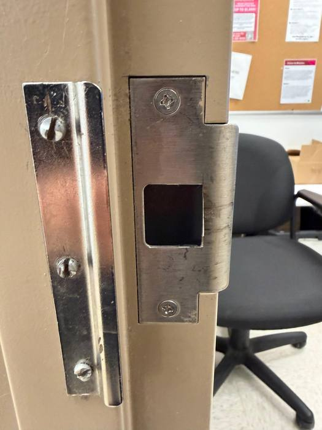
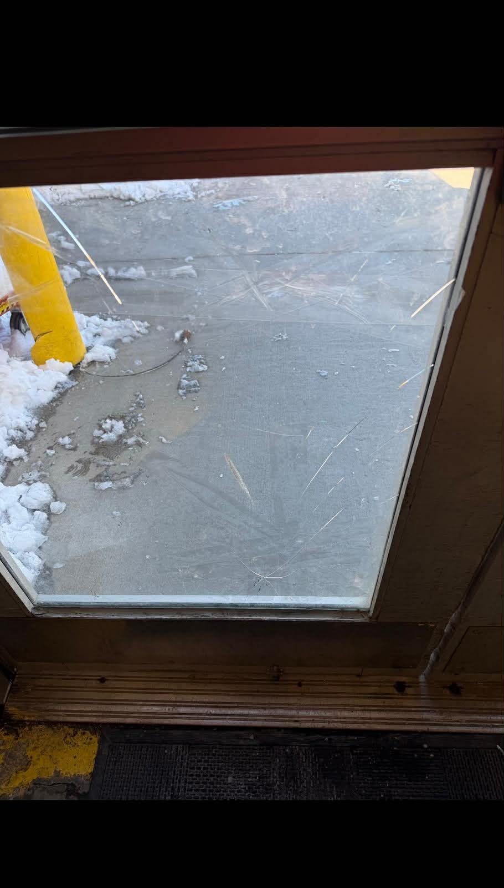

Door Won't Latch
Alignment issues, strike adjustment, and hardware wear that prevents a secure close — resolved quickly and professionally.
When a door won't close, won't latch, or won't secure properly, it becomes a safety and security issue. Capital Glass Door provides professional door repair for commercial and residential properties across Washington DC, Arlington, Alexandria, Maryland, and the entire DMV area. From door closer adjustments and panic bar repairs to complete glass door replacements, we get your doors working safely and reliably.
Our door repair service covers the most common commercial and residential door issues across Washington DC and the DMV:
Alignment issues, strike adjustment, and hardware wear that prevents a secure close — resolved quickly and professionally.
Slamming doors, leaking closers, or slow-closing mechanisms. We adjust, repair, or replace closers to restore proper function.
Sticking locks, worn handles, broken deadbolts, and hardware failures that stop normal door operation.
Panic bar repairs, exit device adjustments, and ADA-compliant hardware installation for commercial buildings in DC.
We service all types of commercial doors including aluminum glass doors, storefront entry systems, and heavy-duty commercial exit doors. If the issue includes broken door glass, see Commercial Glass Door Repair.




We also provide door repair for homeowners across Washington DC, Arlington, Alexandria, and the DMV. Whether it's a sticking front door, a broken patio door, or a garage entry door that won't latch, we can help.
For an urgent door security issue, call 202-643-4062 and describe the door, lock, location, and access problem.
If you need lockout service, rekey, or lock changes, visit our Locksmith Services page.
Call now to discuss urgent door repair or scheduled door service in Washington DC and the DMV.